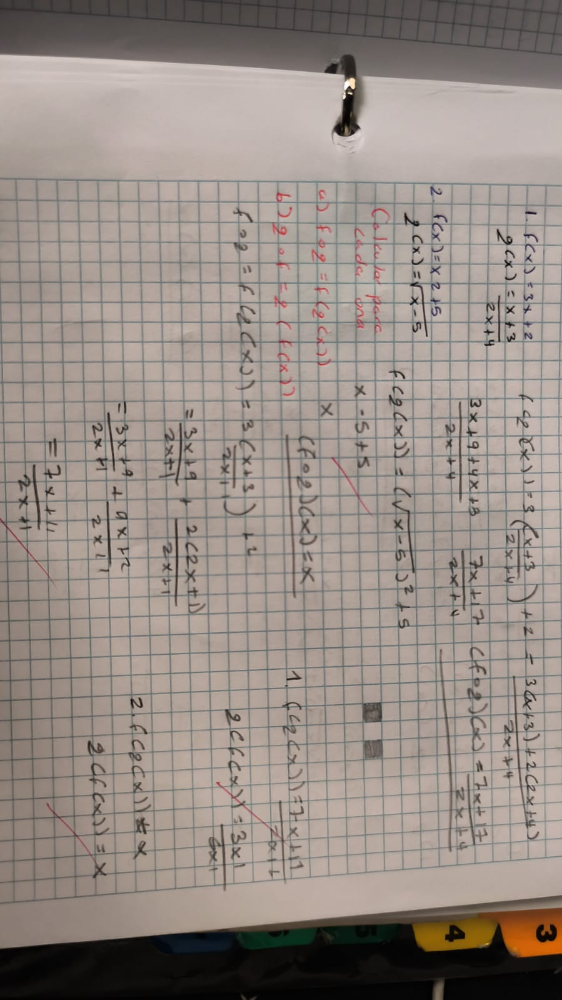
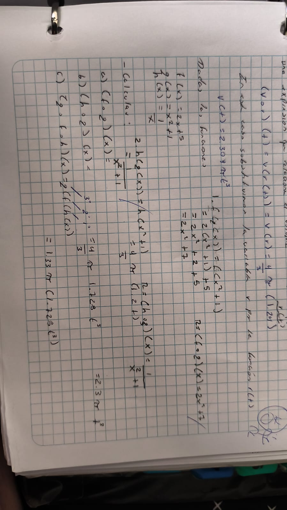
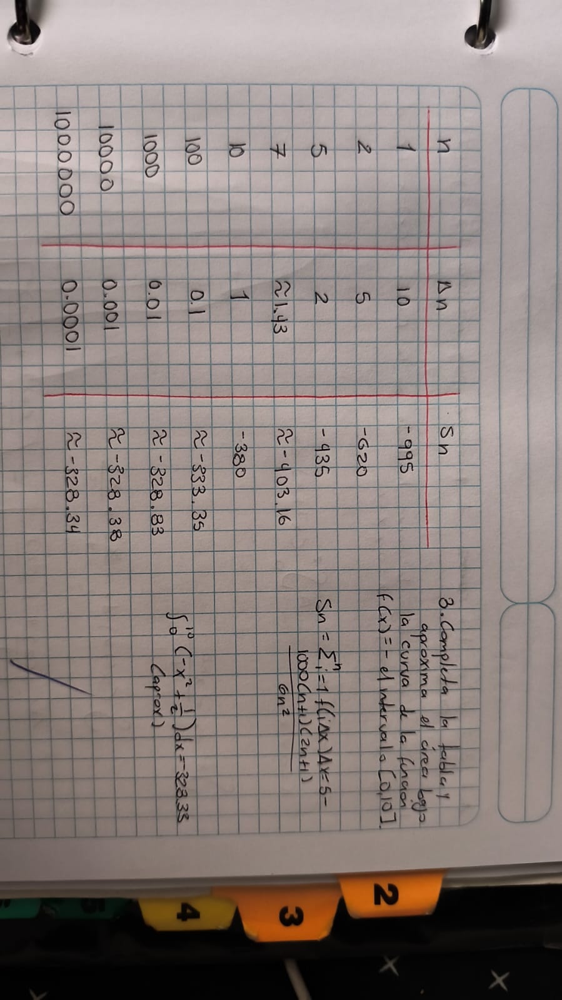
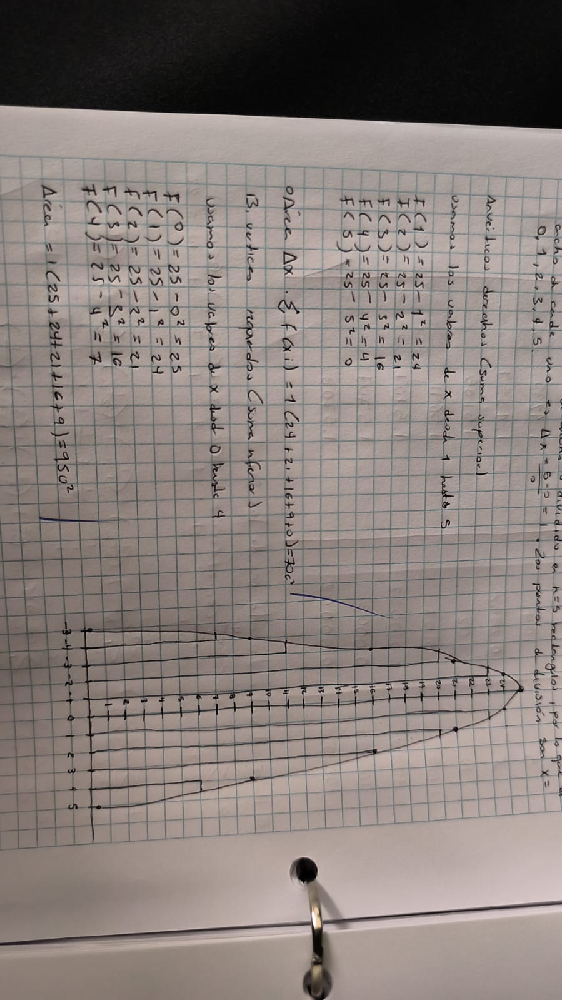
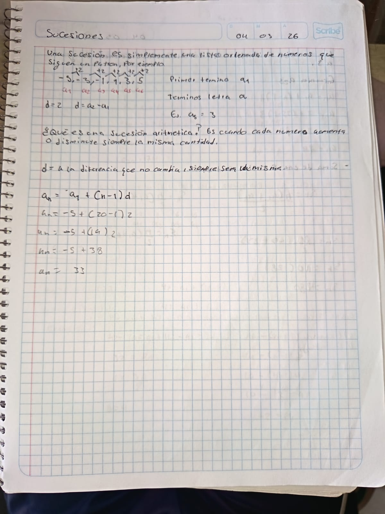
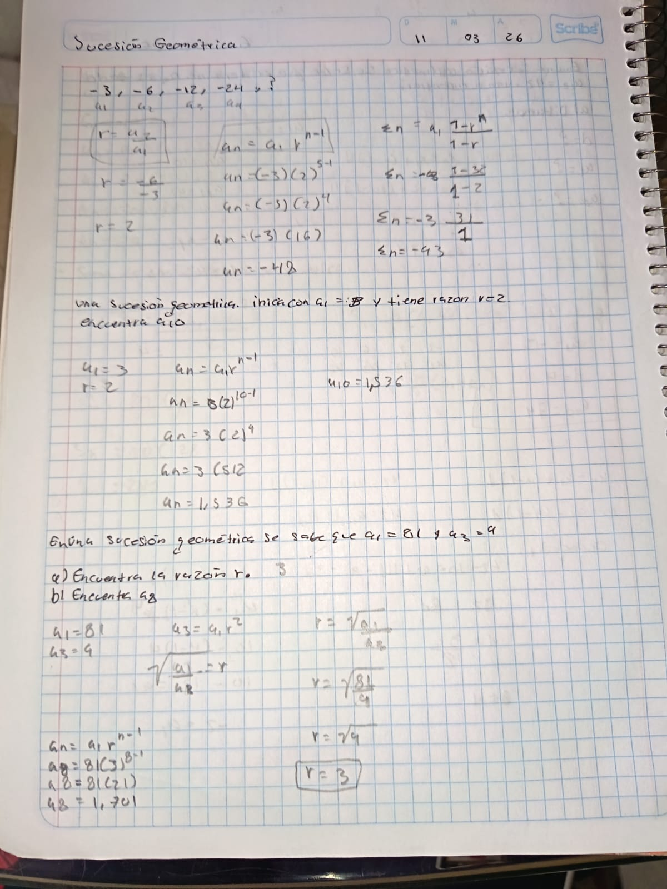

Aprendimos que la composición de funciones consiste en combinar dos funciones de manera que la salida de una funcione como la entrada de otra.

Cuando se componen más de dos funciones, el proceso se realiza de adentro hacia afuera aplicando una función a la vez.

Se realizó una aproximación del área bajo una curva mediante el método de sumas de Riemann, lo cual consiste en dividir un intervalo definido en múltiples rectángulos para sumar sus áreas individuales; este proceso demuestra de forma práctica cómo, al aumentar la cantidad de divisiones y reducir su ancho, la suma resultante se vuelve más precisa hasta converger en el valor exacto de la integral definida de la función.

Dibujamos rectángulos que sobresalen y otros que quedan por debajo para encontrar el área verdadera en medio de ambas sumas.

Trabajamos con listas que crecen sumando la misma cantidad. Aprendimos fórmulas para encontrar cualquier posición rápido.

Analizamos series que se obtienen multiplicando por una cifra fija. Crecen mucho más rápido que las aritméticas.
